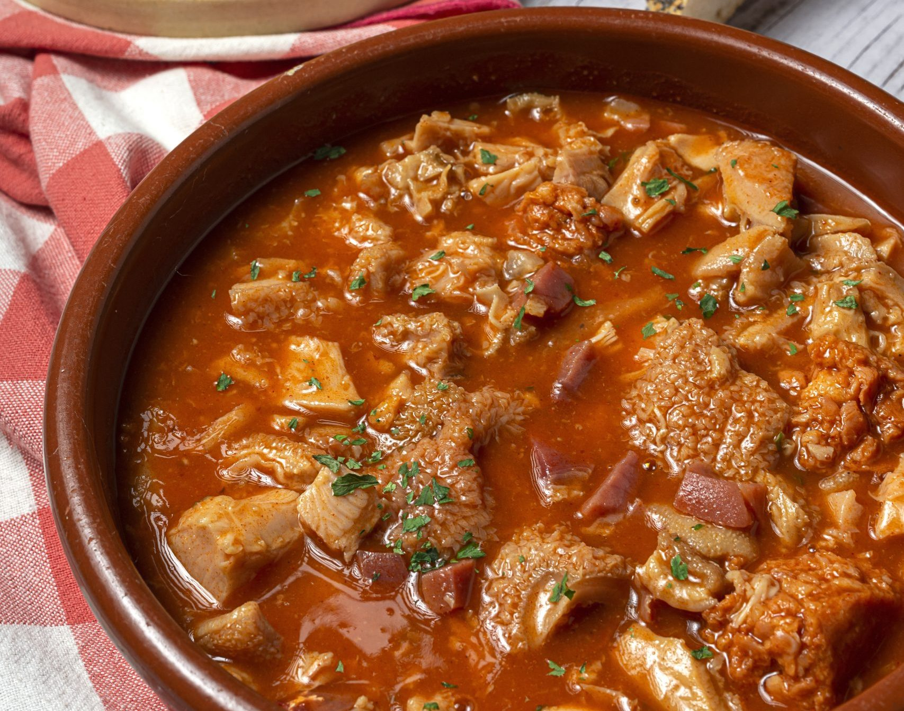
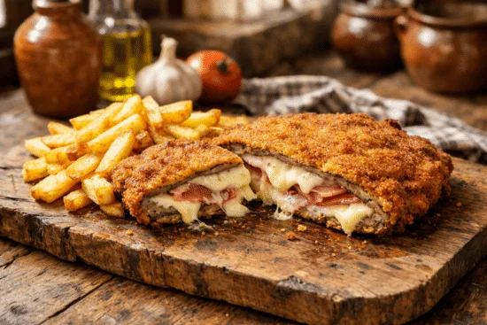
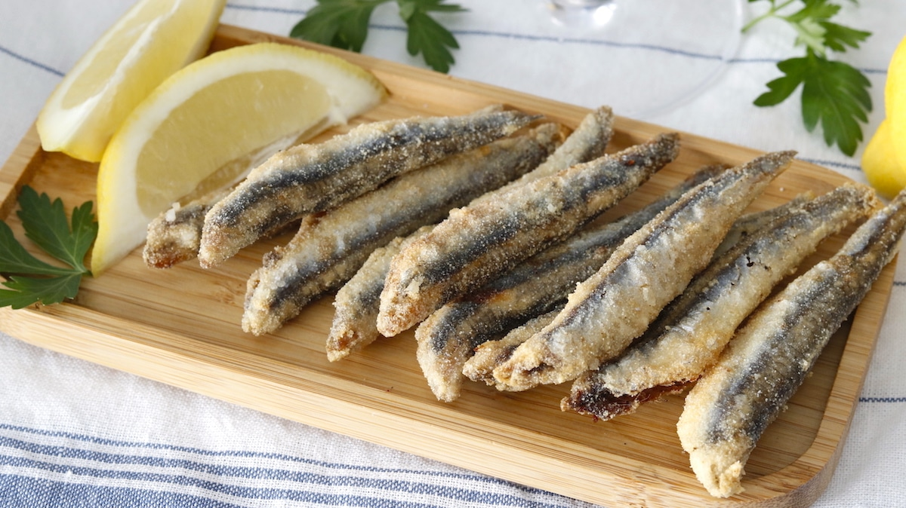

01
Almuerzos
Buenos bocados, platos sabrosos y ese descanso de media manana que aqui se disfruta como toca.
Bienvenidos a
Cocina tradicional española de calidad y hecha con mucho carino. Ven a disfrutar de la comida de toda la vida en un ambiente calido y familiar.
Nuestra cocina
En Tasca-Colmado Maruja cocinamos como se ha hecho siempre: con buenos ingredientes, recetas reconocibles y ese punto casero que convierte cada plato en un recuerdo.
Aqui vienes a comer bien, sin prisas y en buena compania, en un espacio cercano donde cada mesa se atiende con el mismo cuidado que en casa.


Nuestra mesa
Maruja es de esos sitios donde apetece volver: cocina tradicional española, trato cercano y una carta pensada para disfrutar sin complicaciones, con platos que reconfortan y apetecen.
Reserva tu mesaDonde estamos
Tu mesa te espera
Haz tu solicitud de reserva y ven a disfrutar de una comida con sabor tradicional, buen producto y ese ambiente familiar que invita a quedarse un poco mas.